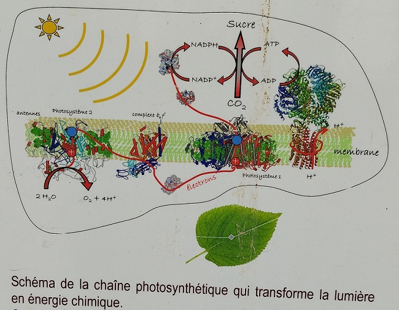
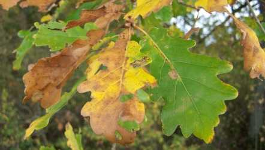

Les feuilles
Leurs formes...parfois surprenantesLeur importanceLeur complexité
La complexité des feuilles
Les feuilles sont des objets vivants, faisant un grand nombre de choses et donc individuellement compliqués. En interaction avec le vent, leurs mouvements influencent la vie des plantes qui les portent.
Les feuilles sont également des organes qui transpirent et des capteurs solaires dont la morphologie influence la physiologie photosynthétique.
Lorsqu'elles se retrouvent dans la pénombre d'un couvert forestier, elles sont fines et deviennent alors particulièrement sensibles à la lumière lors de défrichages brutaux. Car il existe en effet des feuilles d'ombre et des feuilles de lumière.
C'est presque grâce aux feuilles seules que les plantes peuvent effectuer ce que l'on nomme la photosynthèse car bien que n'étant pas les uniques parties vertes des végétaux, grâce à leurs nombreux chlroplastes, ce sont elles qui contiennent le plus de chlorophylle a, cette grosse molécule, absorbeuse de lumière rouge et violette, qui se décompose à l'Automne en laissant le temps aux molécules de β-carotène, d'anthocyanine et de flavonol de nous montrer leurs belles couleurs jaune et orange. Elles contiennent également de la chlorophylle b qui absorbe le bleu et le rouge.
{kind=link}
{kind=link}
Francis Hallé (1938-2025) nous expliquait la photosynthèse :
Le secret de cette grande machine à sucre et à oxygène

Schéma de la chaîne photosynthétique qui transforme la lumière en énergie chimique,
affichage de l'IBPC, rue Pierre et Marie Curie, Paris, 21 octobre 2025
Ce sont les feuilles qui permettent aux plantes de respirer, grâce à un sytème de circulation des gaz, dioxyde de carbone, dioxygène, vapeur d'eau (par leur stomates et tout un réseau de lacunes) mais aussi de transpirer, d'excréter de l'eau par un processus que l'on nomme guttation au travers d’ouvertures (des hydathodes) situées à leur sommet et sur leurs bords.
Au mois de novembre, en Automne,
pourquoi les feuilles vont-elles changer de couleur ?

 Edith Piaf
Edith Piaf  Yves Montand
Yves Montand
Les feuilles mortes de Jacques Prévert
 | |